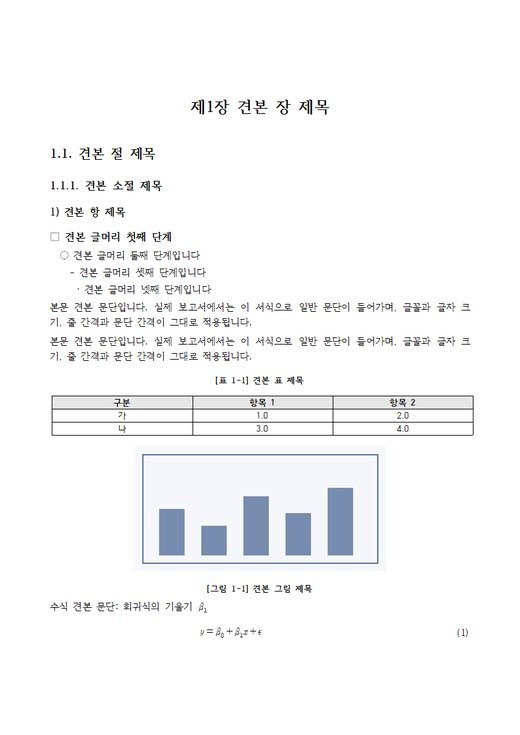
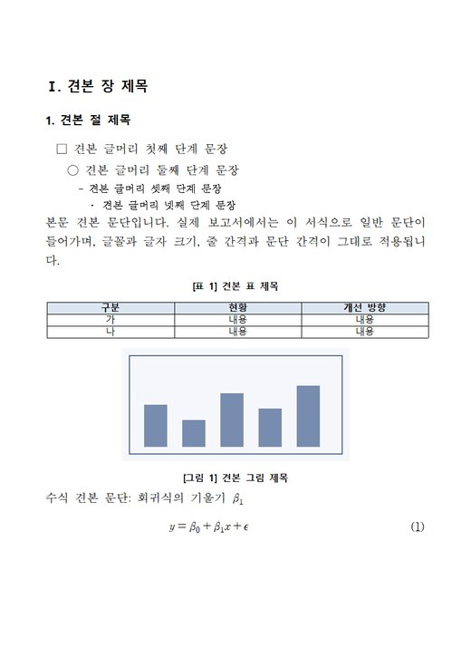
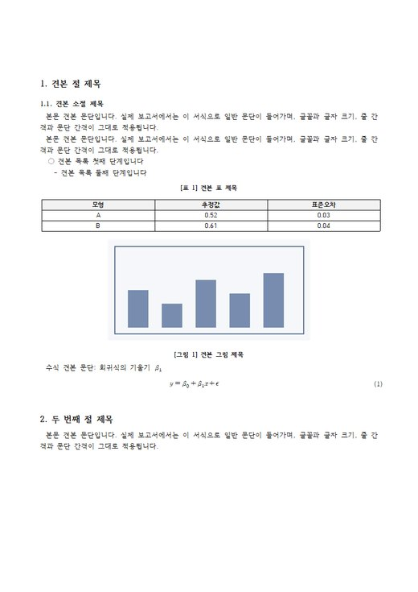
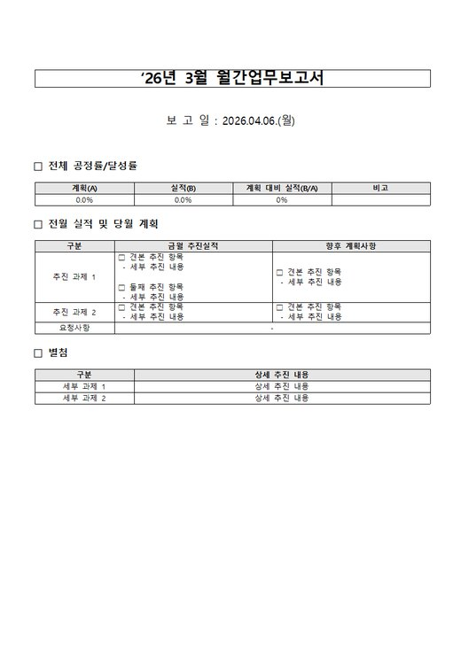

"글꼴이 굴림으로 바뀌고 글머리 들여쓰기가 엉망이에요"
양식의 장 제목, □ ◦ - 글머리, 본문, 주석 줄 서식을 견본으로 배워서 그대로 복제해요. 공백으로 들여쓴 양식도 그 간격 그대로 넣어요.
국가R&D 보고서, 기관 양식, 공문서·개조식 보고서, 경진대회·공모 보고서를 한글 파일로 써 줍니다. 양식에 있는 글꼴·글머리·표·캡션 서식을 그대로 복제해서 넣기 때문에, 한글에서 열었을 때 서식이 깨지지 않아요.
내용은 금방 쓰는데, 한글로 옮기면 서식 정리에 더 오래 걸리곤 하죠. hwp-helper는 Claude가 내용만 쓰고, 서식은 양식 파일에 이미 있는 것을 그대로 가져다 씁니다.
"글꼴이 굴림으로 바뀌고 글머리 들여쓰기가 엉망이에요"
양식의 장 제목, □ ◦ - 글머리, 본문, 주석 줄 서식을 견본으로 배워서 그대로 복제해요. 공백으로 들여쓴 양식도 그 간격 그대로 넣어요.
"표 제목이 따로 놀고, 번호가 엉켜요"
표·그림 제목은 한글의 캡션 기능으로 붙여요. 번호는 한글 자동 번호라 나중에 표를 끼워 넣어도 알아서 바뀌어요.
"수식이 그림으로 들어가거나 크기가 이상해요"
LaTeX로 쓰면 한글 수식 개체로 바꿔 넣어서, 한글 수식 편집기로 고칠 수 있어요. 한글이 있으면 크기도 한글이 다시 계산해요.
"월간보고서 칸을 채우다 서식이 날아갔어요"
표 칸의 글머리 기호, 파란 글씨 같은 글자색, 칸에 붙은 한글 메모까지 지키면서 내용만 바꿔요.
Claude가 단계마다 먼저 보여 주고 확인받아요. 마음에 안 들면 그 자리에서 고쳐 달라고 하면 돼요.
양식 파일이 있으면 그 파일을, 없으면 프리셋 4종 중 하나를 골라요. 분량(쪽수)도 이때 정해요.
"한글로 보고서 써줘"장·절 제목과 들어갈 표·그림, 장마다 예상 분량을 먼저 보여 줘요. 양식의 작성 요령이 묻는 항목도 빠짐없이 넣어요.
"3장은 결과를 더 자세히"본문을 쓰고 한글 파일로 만든 뒤, 쪽 이미지를 직접 보고 겹침·빈 공간·쪽 끝에 홀로 남은 제목을 고쳐요.
번호·참조·날짜·빈 칸·남은 양식 안내 문구를 점검하고, 표지 칸(과제명·팀명·요약)까지 채워요.
"표지도 채워줘"결과는 늘 새 파일(_작성.hwpx)로 저장돼요. 다시 고치면 _작성2처럼 이어 붙여요.
아래 화면은 모두 예시 내용으로 실제 플러그인이 만든 한글 파일을 한글에서 찍은 것이에요.
장·절·항 번호 체계와 개조식 글머리, 장별 번호([표 1-1])를 쓰는 연구 보고서예요.
Ⅰ. · 1. · □ · ○ · - 단계로 쓰는 기관 내부 보고·계획서예요. 한 줄마다 무엇을·왜·결과까지 담아 쓰고, ※ 주석 줄은 양식의 주석 서식으로 들어가요.
기관이 준 양식 파일(.hwp도 됨)이 있으면 언제나 그 양식이 우선이에요.

rnd-report 함초롬바탕 11pt
gov-brief 휴먼명조, Ⅰ.·1.·□○-
paper 1.·1.1., 첫 줄 들여쓰기
progress 표 칸 채우기Claude 데스크톱 앱의 Code 탭이나 터미널에서 새 채팅을 열고, 아래 문장을 그대로 붙여 넣으면 돼요. 중간에 명령 실행 허락을 물으면 허용하세요.
hwp-helper 플러그인(https://github.com/chshoong/hwp-helper)을 설치해줘. 순서대로 해줘. 1. claude 명령을 찾아. PATH에 없으면 %USERPROFILE%\.local\bin\claude.exe, 그다음 Claude 데스크톱 앱 폴더(윈도우는 %APPDATA%\Claude\claude-code\<버전>\claude.exe) 중 가장 최신 버전을 써. 그래도 없으면 PowerShell에서 irm https://claude.ai/install.ps1 | iex 로 설치해(진행 표시 없이 1~3분 걸리니 끝날 때까지 기다려). 2. claude plugin marketplace add chshoong/hwp-helper 와 claude plugin install hwp-helper@hwp-helper 를 실행해. 3. 파이썬 3.10 이상이 있는지 확인하고, 없으면 알려줘. 있으면 python -m pip install --user lxml Pillow 로 필요한 부품을 설치해. 4. claude plugin list로 설치됐는지 확인하고, 새 채팅을 열어야 적용된다고 알려줘.
설치가 끝나면 새 채팅을 열고 아래 "처음 시작하기"를 따라 하세요. 플러그인은 채팅을 시작할 때 불러와요. 새 버전이 나오면 "hwp-helper 플러그인 업데이트해줘"라고 하면 돼요.
Settings › Plugins에서 오른쪽 위 + Add 옆 화살표로 마켓플레이스를 추가하고 chshoong/hwp-helper를 넣어요. 그다음 Discover에서 hwp로 검색해 Hwp helper를 Install하세요. 앱 버전에 따라 메뉴 이름이 조금 다를 수 있어요.
claude 명령이 되는 터미널에서 실행하세요. Claude 화면 안이라면 앞에 /를 붙여 /plugin …으로 입력해요.
claude plugin marketplace add chshoong/hwp-helper
claude plugin install hwp-helper@hwp-helper
Windows PowerShell에서 설치해요. 진행 표시 없이 내려받으니 Ctrl+C를 누르지 말고 기다리세요. 끝나고 claude를 못 찾으면 & "$HOME\.local\bin\claude.exe"로 실행하면 돼요.
irm https://claude.ai/install.ps1 | iex
Plugins 화면에 업데이트가 안 보이면 아래 두 줄을 실행하고 새 채팅을 여세요.
claude plugin marketplace update hwp-helper
claude plugin update hwp-helper@hwp-helper
새 채팅에서 아래 순서대로 말하면 돼요. Claude가 모르는 것은 먼저 물어봐요.
기관·공모전이 준 양식(.hwp, .hwpx)이 있으면 경로를 알려 주세요. 없으면 프리셋 4종 중에 고르게 해 줘요.
"양식은 C:\과제\결과보고서_양식.hwp야"
분석 결과 폴더, 그림, 기존 문서(md·docx·pdf), 이전 한글 보고서 어떤 것이든 돼요. 자료에 없는 숫자는 지어내지 않고 ( )로 비워 둬요.
"results 폴더랑 figs 폴더 보고 써줘"
공고에 쪽수 제한이나 배점이 있으면 그걸 따르고, 없으면 간략·보통·상세 중에 골라요.
"장마다 1~2쪽 정도로"
목차를 확인해 주면 본문을 쓰고, 쪽 미리보기와 검토 결과를 함께 보여 줘요. 고칠 곳은 말로 하면 돼요.
"표 2는 그림으로 바꿔줘", "2장만 다시 써줘"
명령어를 외울 필요는 없어요. 명령으로 부르고 싶다면 /hwp-helper:hwp-write, hwp-fill, hwp-review, hwp-convert도 있어요.
| 하고 싶은 일 | 이렇게 말하기 | Claude가 하는 일 |
|---|---|---|
| 새 보고서 | "한글로 보고서 써줘" | 형식·자료·분량을 묻고, 목차를 확인받은 뒤 양식 서식 그대로 한글 파일을 만들어요. |
| 양식 칸 채우기 | "3월 월간보고서 채워줘" | 양식 표의 칸 주소를 찾아 채울 내용을 먼저 보여 주고, 확인받은 뒤 채워요. 달·날짜 글자도 바꿔요. |
| 일부만 고치기 | "2장만 다시 써줘" | 기존 한글 파일을 읽어서 그 부분만 바꾸고, 표·그림 번호를 다시 매겨요. |
| 검토 | "이 한글 파일 검토해줘" | 번호·참조, 날짜·요일, 빈 칸, 남은 안내 문구, 글꼴 섞임을 찾아 알려 줘요. |
| 표지·요약 | "표지도 채워줘" | 과제명·팀명·날짜는 물어보고, 내용요약은 본문에서 뽑아 넣어요. |
| 변환 | "hwp로도 저장해줘", "PDF로 바꿔줘" | 한글이 설치된 Windows에서 한글로 변환해요. |
| 업데이트 | "hwp-helper 플러그인 업데이트해줘" | 새 버전을 받아 와요. 새 채팅부터 적용돼요. |
한글(한컴오피스)이 설치된 Windows에서 가장 잘 돼요. 한글이 없는 PC(Mac 등)에서도 .hwpx 파일은 만들어져요.
| 할 수 있는 일 | 한글 설치된 Windows | 한글 없음 |
|---|---|---|
| .hwpx 만들기·채우기·검토 | 됨 | 됨 |
| .hwp 읽기·저장, PDF | 됨 | 한글에서 HWPX로 저장해 달라고 안내해요 |
| 쪽 미리보기 | 됨 (Claude가 직접 보고 고침) | 없음 |
| 수식 크기 | 한글이 정확히 계산 | 추정값 (한글 실측으로 보정) |
처음 몇 번은 python …hwpx.py 실행 허락을 물어요. 허락할 때 "항상 허용"을 고르면 다음부터는 묻지 않아요.
한글 안에 확인 창(보안 승인, 글꼴 대체 안내)이 떠 있는 경우가 많아요. 한글을 한 번 직접 열어 창을 닫고(보안 승인은 '모두 허용') 다시 부탁하세요.
앱이 새 버전을 바로 받아 오지 않을 때가 있어요. "hwp-helper 플러그인 업데이트해줘"라고 하거나, 위 "새 버전 받기"의 두 줄을 실행한 뒤 새 채팅을 여세요.
PowerShell에 바로 입력한 경우예요. PowerShell에서는 claude plugin …(슬래시 없이), Claude 화면 안에서는 /plugin …으로 입력하세요.
처음에 분량이나 쪽수를 알려 주세요. 개조식이어도 한 줄에 무엇을·왜·결과(수치)·의미까지 담아 쓰도록 되어 있어요. "더 자세히 써줘"라고 해도 돼요.
양식에 쓰인 글꼴(휴먼명조 등)이 내 PC에 없으면 한글이 다른 글꼴로 보여 줘요. 파일에는 원래 글꼴이 들어 있어서, 그 글꼴이 있는 PC에서 열면 정상으로 보여요.
한글 파일은 모두 내 컴퓨터에서 만들어지고 저장돼요. Claude가 자료와 양식을 읽는 것은 평소 Claude Code 사용과 같아요.